Navigace |
Pes v posteli:-)Vzhledem k tomu, že jsem většinu z posledních 4 týdnů proležela, nezbylo Nele nic jiného, než strávit většinu času solidárně se mnou v posteli. 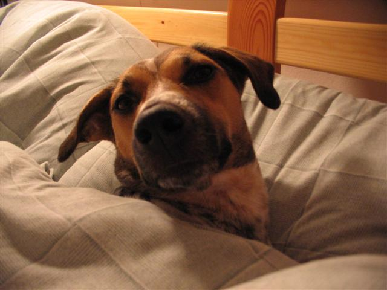 Což mi připomnělo krátké období, kdy jsme si mysleli, že náš (vychovaný) pes v posteli rozhodně (nebo aspoň většinou:-) ) ležet nebude. Jenže pak se časem a z několika důvodů začala oslabovat východiska našeho rozhodnutí, že Nela bude mimo postel.Jednak se k nám usilovně od počátku drápala a tušili jsme, že jen co trochu povyroste, tak se jí to i podaří. Další pochybnosti vyvstaly, když jsem byla loni nemocná celý den doma sama s naším tříměsíčním štěňátkem - no kde jinde mohla být než v posteli... To jsme si říkali, že to bude jen přes den a výjimečně. V prosinci už Nela povyrostla, takže se začala tulit, nejdříve si k k nám lezela ráno...za pár dnů brzy ráno...pak už spíš někdy během noci. Nakonec zbývaly asi dvě hodiny spánku bez psiska, ačkoli večer vzorně uléhala v pelíšku. Poslední ranou byl jistý článek o výchově psa, v němž se uvádělo, že pes, který není s páníčkem v posteli se cítí odstrčený od smečky, který jsme si četli jednou před spaním. Jako kdyby Nela věděla, o co kráčí: nejdříve nás hypnotizovala z pelíšku a pak hupla na postel. Následovala hodinová diskuse mezi mnou a Rudolfem, jestli jí v posteli necháme - zatímco Nela už spokojeně zařezávala na peřině. Samozřejmě že jsem byla já za drsňáka a Rudolf za toho shovívavého, který ji tam chtěl nechat:-) Od té doby posilujeme i v noci, protože Nelino velmi oblíbené místo je na peřině. Opravdu není snadné se pořádně přikrýt,když Vám na peřině leží 12 kilo váhy ve strakatém kožíšku. Až postupem času se Nela naučila spát pod peřinou, ale bohužel se nenaučila povel "radiátor", který se učí strakatá psí slečna Jaga a který spočívá v tom, že pes na daný povel zahřívá pod peřinou nohy:-) Nicméně už dokáže být o něco něžnější, než když byla malá, takže jsme o něco méně podupaní... 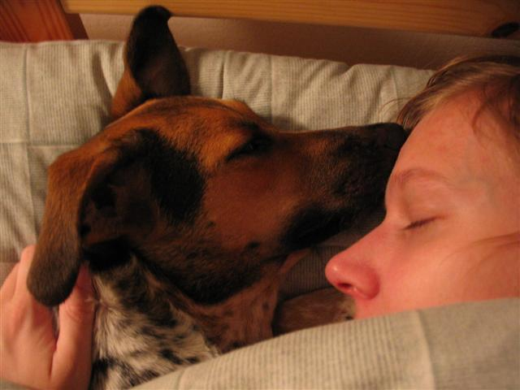 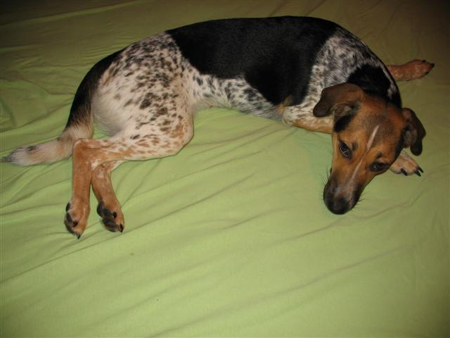 Na posteli má až zenově klidný výraz:-) 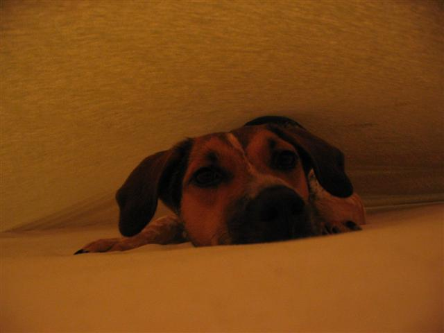 Nela asistující u převlékání prostěradla...svým laxním přístupem nám to moc neusnadnila:-)
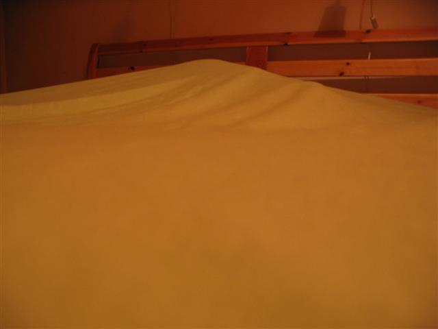 Během říjnového poléhávání jsem měla i nevšední zážitky - dva psi v posteli a musím říct, že mi v ní s berňačkou a strakatou už bylo poněkud těsno. Tím spíš, že největští bitky si vyhradily právě na postel nebo pod ní. Když pod postel vleze Nela většinou to není problém, ale když se tam snaží nacpat víc jak čtyricetikilová Grimma, tak už se mnou nadskakoval rošt:-)
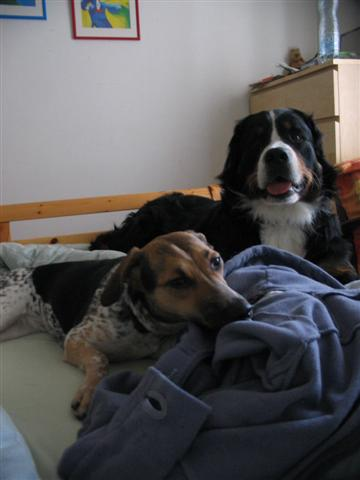
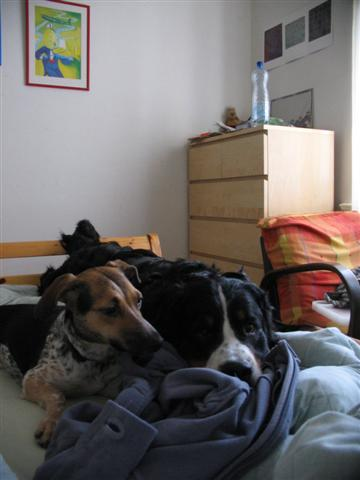 Jestli se Vám zdá, že se obě tváří docela klidně, nenechte se zmást - to byla chvilková pauza mezi bojem na posteli a pod postelí:-) Zbytek fotek jsou velmi rozmazané šmouhy:-)
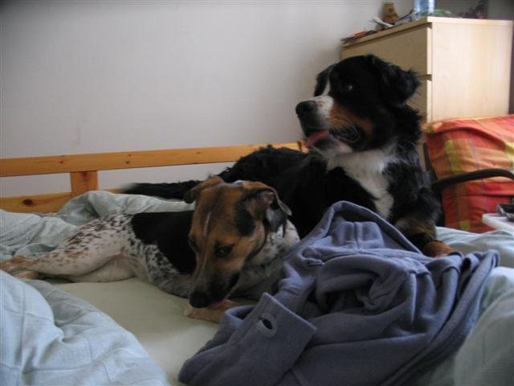
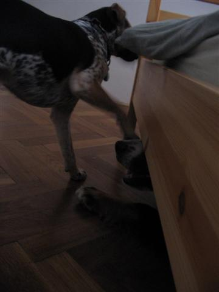 "Polez ven." 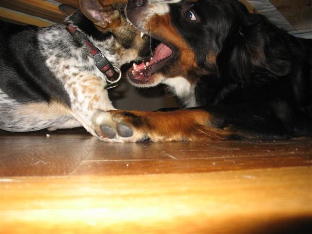 Bitva v underground verzi.
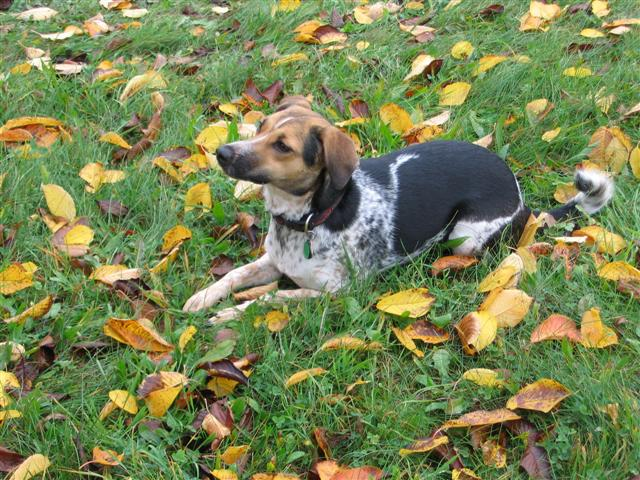 Podzimní kompozice. 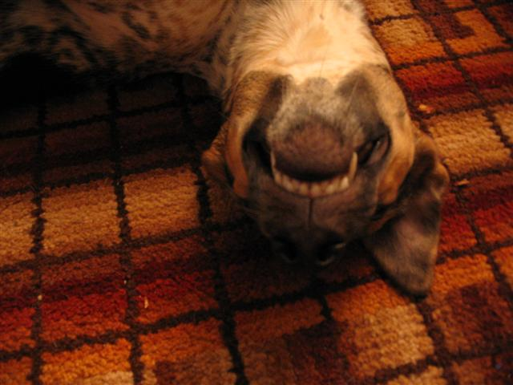 Má oblíbená zubatá fotka. 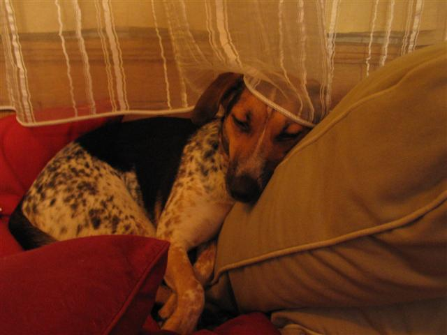 Nelino závojové stanoviště. 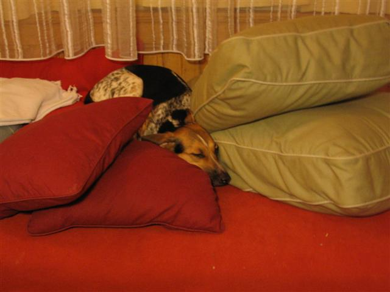 Nevím jestli je v charakteristice českého strakatého psa, že je také mj. skladný a ochotný vecpat se kamkoli:-) Zvlášť pokud máte v ruce něco dobrého...
|